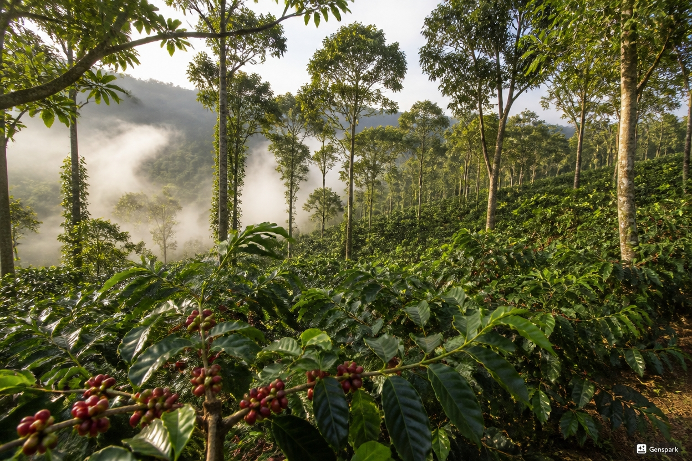

Transparency
Farm, altitude, varietal, process and price context on every bag. If we can't tell you where a coffee came from, we don't sell it.

Roast & Root began in a Bengaluru kitchen with a question: why was it so hard to find Indian specialty coffee that explained itself? Supermarket shelves carried blends with no origin, no roast date and no story — while the remarkable farms growing India's best coffee stayed invisible.
We started roasting tiny batches in 2019 for friends and neighbourhood cafés, always naming the farm on the bag and always printing the roast date. The idea caught on. Today we work with independent growers across four coffee-growing regions — Araku Valley, Chikmagalur, Coorg and the Nilgiri Hills — roasting every lot in batches of 12 kg or less.
Our goal hasn't changed: make specialty Indian coffee easier to understand and easier to enjoy, one honestly labelled bag at a time.


Roasting is translation: our job is to take what a farm grew and express it in the cup, not to impose one flavour on every coffee. That is why no two of our roast profiles are alike.
A delicate washed lot from Chikmagalur is roasted light and fast, stopping development early to protect its jasmine and citrus notes. A dense, monsoon-grown coffee from Coorg gets a slower, deeper medium-dark profile that develops body and cocoa sweetness. Between those poles sit dozens of small decisions — charge temperature, turning point, development ratio — adjusted batch by batch.
Before any coffee reaches production, we profile it on a 1 kg sample roaster, cup it side by side with previous batches, and only then lock the profile for the 12 kg drum. If a batch cups below spec, it does not ship.
Farm, altitude, varietal, process and price context on every bag. If we can't tell you where a coffee came from, we don't sell it.
Small batches, hand-logged roasts and cuppings for every production run. Roasting is a skill we practise daily, not a factory step.
Shade-grown lots, compostable bags, and roaster chaff sent back to farms as mulch. The hills made this coffee — we work to keep them healthy.
We taste, experiment and publish what we learn — from processing experiments to new brewing methods — and invite you to do the same.
The small team that selects, roasts and packs every batch.
Meera logged her first roast curve on a battered 1 kg sampler and never stopped. She develops every roast profile and leads the weekly cuppings that decide what ships. Firmly of the opinion that a light-roast Chikmagalur is the perfect morning cup.
Arjun spends harvest season on the road — cupping lots in Araku Valley, walking estates in Chikmagalur, and negotiating prices face to face with growers. He maintains our farm partnerships and traces every bag back to its hillside.
Priya writes the brewing guides and the Coffee Journal, and runs our Saturday public cuppings at the roastery. She believes anyone can learn to taste coffee — no jargon or certification required, just attention.
Please note: Roast & Root Coffee Co. is a fictional brand, and the team members above are fictional characters created for this demonstration website.
The best way to understand our philosophy is to brew a bag of it.
Explore Our Coffee